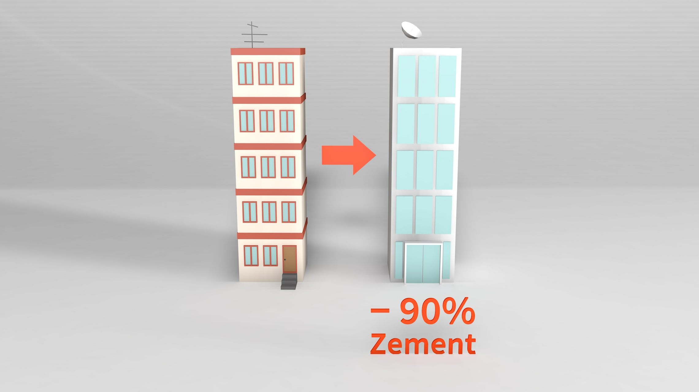

Zement ist das am meisten produzierte Material der Welt. Es wird tonnenweise gebraucht um neue Gebäude zu bauen. Die Verwendung von Zement bringt allerdings gibt es ein grosses Problem mit sich. 8% der weltweiten CO2-Emissionen werden durch die Zementherstellung verursacht. Um den Klimawandel zu stoppen und den Planeten zu schützen braucht es dringend nutzbare Alternativen zu Zement.
Die Schweiz stösst pro Jahr 37 Millionen Tonnen CO2 aus.
Davon sind 4.9 Millionen Tonnen auf die Zementindustrie zurückzuführen, das sind 7% der gesamten CO2-Emissionen der Schweiz
.Diese 15 weiteren Länder gehören weltweit zu den grössten Produzenten von Zement auf den jeweiligen Kontinenten. Sie stehen exemplarisch für das Problem der Zementherstellung.
Mit 2.28 Milliarden Tonnen Zement produziert China mit Abstand am meisten, gefolgt von Indien mit 338 Millionen Tonnen.
Werden die Zahlen in Relation zur Bevölkerung betrachtet ergibt sich ein anderes Bild. China, die Türkei, die Schweiz und Ägypten produzieren pro Kopf sehr viel Zement, was zeigt, dass es sich um ein globales Problem handelt.
Zement besteht aus einer Mischung aus Kalk, Mergel und Korrekturstoffen die in einem Drehrohrofen bei 1450 Grad gebrannt wird. Für den Betrieb des Ofens wird viel Energie benötigt. Während dem Brennprozess wird aus den Grundstoffen ein synthetisches Mineral, der Zementklinker. Durch diesen chemischen Prozess wird viel CO2 von den Grundstoffen in die Umwelt freigesetzt.
Seit Jahren arbeitet die Wissenschaft daran die Produktion von Zement ökologischer zu gestalten und das durchaus auch mit Erfolg. Durch die Verwendung von unterschiedlichen Zusatzstoffen konnten die freigesetzten Treibhausgase bereits um 30% reduziert werden.
Diese Reduktion steht jedoch in keinem Verhältnis zu der erhöhten Nachfrage nach Zement, die in den letzten 30 Jahren von 1 Milliarde auf 4 Milliarden Tonnen pro Jahr gestiegen ist. Aus diesem Grund müssen wir Alternativen zum Zement nutzen.
Eine interessante und mögliche Alternative zur Betonbauweise ist das Bauen mit Holz. Durch den technologischen Fortschritt gibt es heute mehr Möglichkeiten im Holzbau als früher. Grosse Brücken und bis zu einhundert Meter hohe Hochhäuser können mit Holz als Grundbaustoff erstellt werden. Durch die Verwendung von Holz anstatt Beton kann bis zu 70% des gesamten benötigten Zements eingespart werden.
Einzig das Fundament muss aus Beton bestehen. Holz ist nachhaltig, vielseitig und einfach einsetzbar und verbessert zudem noch das Raumklima. Weiter würden die aus Holz errichteten Gebäude als Kohlenstoffspeicher funktionieren, da das vom Baum im Holz aufgenommene CO2 gelagert wird. Die benötigte Menge an Holz ist theoretisch da, jedoch würde ein solcher Trendwechsel eine sehr sorgfältige und nachhaltige Waldwirtschaft benötigen.
Am wenigsten Zement wird benötigt, wenn ein Gebäude gar nicht erst gebaut werden muss. Umbauten und Sanierungen sind daher naheliegende Lösungen um Zement und somit auch zum CO2 sparen.
Bei einer cleveren Sanierung oder Umnutzung wird Zement nur verwendet, um anfallende Reparaturen auszuführen oder einzelne Wände neu zu arrangieren. Im Vergleich verursacht ein Umbau bis zu 80% weniger CO2 als ein Neubau. Zudem kommt ein energetisch voll saniertes Haus auf die praktisch gleiche jährliche CO2-Bilanz, wie ein Neubau. 2020 haben Expert:innen herausgefunden, dass bei einem beispielhaften Neubau über die gesamte Lebensdauer gerechnet, mehr als 70% der verursachten Treibhausgase während der Erstellung des Gebäudes anfallen.
In Zukunft kann nicht immer auf Zement verzichtet werden und dazu braucht es eine Lösung. Forscher:innen arbeiten dazu an einer weiteren vielversprechende Alternative zum konventionellen Zement, dem Karbon-negativen-Zement. Zurzeit gibt es zahlreiche Projekte, die alle das Ziel verfolgen CO2 aus der Luft zu extrahieren, zu speichern und damit den Zement während der Herstellung anzureichern. Das Ergebnis ist ein Zement, der die verursachten CO2-Emissionen rückgängig macht oder sogar mehr speichert, als er verursacht.
Viele dieser Projekte sind noch in ihren Kinderschuhen und noch nicht auf dem Markt etabliert. Es fehlt im Moment noch an überzeugenden Anreiz- und Geschäftsmodellen. Durch den voranschreitenden Klimawandel werden steigt das Bewusstsein für unseren Planeten und somit werden auch die Stimmen nach zukunftsweisenden Alternativen immer lauter.
Aber wie würden sich Kohlendioxid-Emissionen verhalten, würden wir die jeweiligen Alternativen global und umfassend verfolgen?
Die Gebäude zeigen die CO2-Emissionen der ausgewählten Länder aus dem Jahr 2019.
Durch den Einsatz von Holz könnte bis zu 70% des verbrauchten Zements gespart werden.
Würden Häuser immer saniert werden, anstatt abgerissen und neu bauen gebaut zu werden, könnte je nach Gebäude 70% bis 100% des verbrauchten Zements gespart werden.
Wenn für alle Materialien, die Zement beinhalten, Karbon-negativer-Zement verwendet werden, könnten theoretisch alle CO2-Emissionen durch das Speichern ausgeglichen werden, oder sogar mehr Emissionen gespeichert als verursacht werden.
Natürlich ist es in der Realität nicht möglich eine der Alternativen radikal umzusetzen, jedoch könnten wir vermehrt zukunftsorientierte Materialien und Möglichkeiten nutzten um einen Beitrag zu leisten den CO2-Ausstoss auf der Welt zu verringern.
Würden wir die vorgestellten Möglichkeiten öfters verwenden, würden wir nicht nur die Erde schützen, sondern würden auch in spannenderen Städten und Dörfern wohnen mit vielfältigen Gebäude und abwechslungs-reichen Strassen.
Die Betonwüste könnte langsam einer fast schon utopischen Stadt der Zukunft weichen.